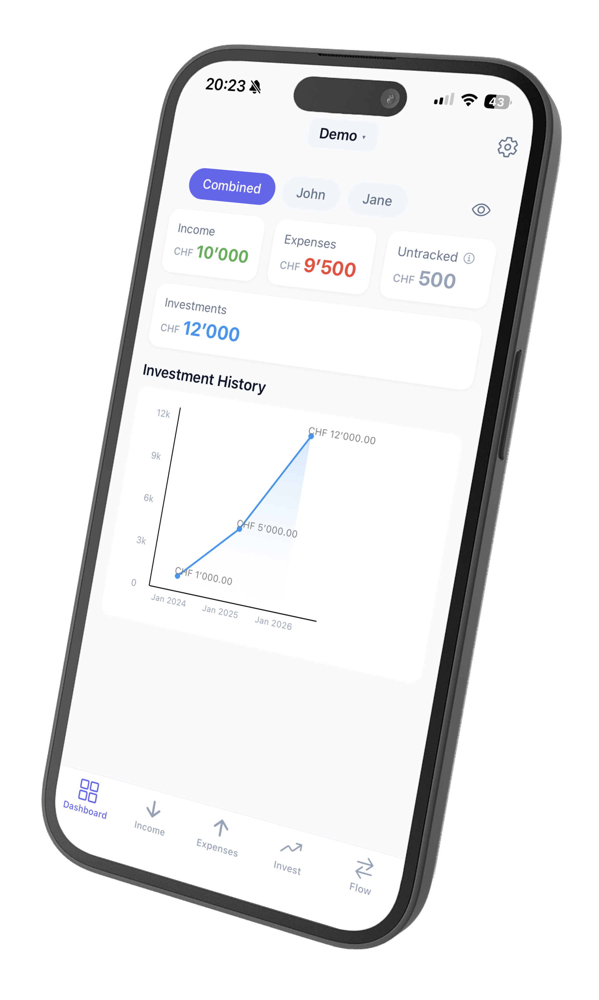
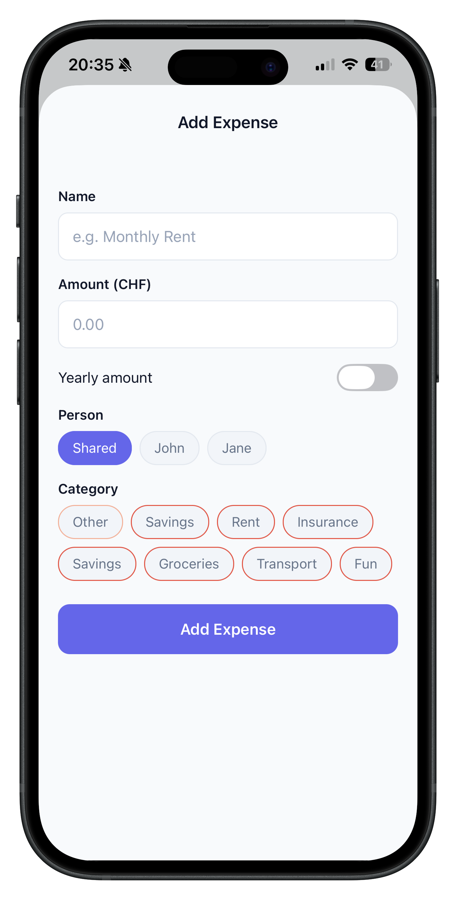
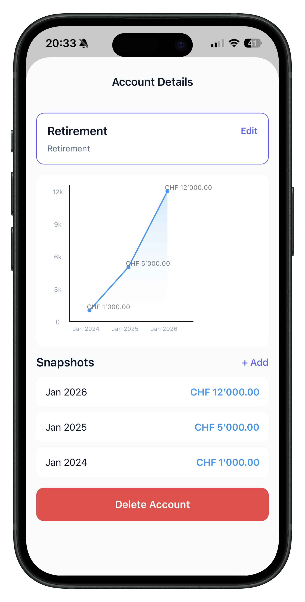
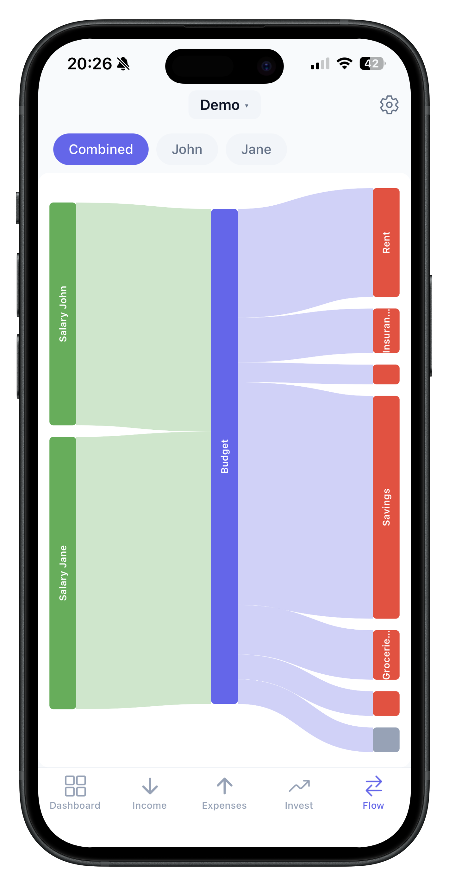

Track income, expenses, and investments for your whole household — with beautiful visualizations and zero cloud dependencies.

Powerful features, simple interface — no finance degree required.
Log every source of income and fixed cost. Temporal versioning means your history stays accurate as things change.
Track finances per person or as shared costs that split equally. Perfect for couples and families managing money together.
Monitor portfolios with periodic snapshots. See performance over time with interactive line charts.
A beautiful Sankey diagram shows exactly where your money comes from and where it goes — at a glance.
Handle multiple currencies with automatic conversion to your base currency. Great for international households.
One tap to hide all amounts. Safely review your finances in public without anyone peeking over your shoulder.
Three simple steps to financial clarity.

Enter your income, fixed costs, and investment accounts. Set up household members if needed.

Charts and Sankey diagrams turn raw numbers into clear, visual insights.

Understand your cash flow and plan ahead with confidence.
PennyLens is built offline-first. Your financial data is stored locally on your device using SQLite — never uploaded, never shared, never monetized.
No accounts. No cloud sync. No tracking. Just you and your finances.